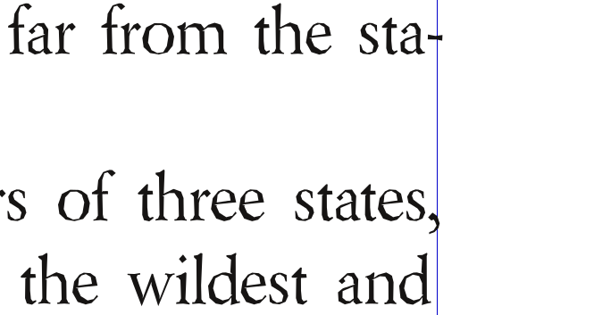

Was ist neu in Scribus 1.4.4?
Hier finden Sie einen Überblick über die wesentlichen Erweiterungen von Scribus 1.4.3 im Vergleich zur letzten offiziell stabilen Version 1.3.3.14.
Beachten Sie, daß sich das Dateiformat geändert hat und nicht rückwärtskompatibel ist. Sie können daher Dateien aus Version 1.4.3 nicht mit 1.3.3.14 oder einer früheren Version öffnen.
Allgemeines
- Beim ersten Start bietet 1.4.3 an, eine bestehende Konfiguration einer früheren Version (soweit relevant) zu übernehmen. Die Konfigurationsdaten werden jedoch separat gespeichert, so daß Sie beide Versionen parallel verwenden können.
- Sie können beide Versionen nebeneinander installieren und parallel starten, aber Sie müssen darauf achten, sie in verschiedenen Verzeichnissen zu installieren. Unter Linux/UNIX heißt das beispielsweise, 1.3.3.x nach
/opt und 1.4.3 nach /usr/local oder $home/bin zu installieren. Wenn Sie Scribus aus dem Quellcode kompilieren, können Sie dazu -DCMAKE_INSTALL_PREFIX:PATH= verwenden, um das Zielverzeichnis festzulegen. Auf anderen Plattformen können Sie das Zielverzeichnis während des Installationsprozesses der Binärpakete auswählen.
Neues in Scribus 1.4.4
Portierung auf Qt4
Die Portierung auf Version 4 des Qt-Toolkits war eine der größten Herausforderungen bei der Entwicklung von Version 1.4.x, doch der Aufwand hat sich gelohnt, denn er hat es uns ermöglicht, endlich Versionen für Mac OS X, Haiku und OS/2 bzw. eComStation anzubieten, die hinsichtlich ihrer Funktionalität nicht mehr hinter den Linux- und Windows-Pendants zurückstehen. Für Windows gibt es außerdem eine Portable App. Darüber hinaus werden die folgenden Betriebssysteme unterstützt: Debian GNU/Hurd, FreeBSD, PC-BSD, NetBSD, OpenBSD, Solaris, OpenIndiana.
Objektbehandlung
- Bedeutdende Erweiterungen zur »Mehrfach Duplizieren«-Funktion.
- Transformationswerkzeuge, wie in Illustrator.
- Neue Optionen zum Ausrichten und Verteilen von Objekten.
- Fortgeschrittene Optionen zur mehrfachen Objektauswahl.
Text und Typographie
Typographie:
- Glyphenstauchung.
- Variabler Abstand der ersten Zeile vom Textrahmen.
- Zeichenstile.
- Ein neuer Stilmanager mit Stilhierarchien, geklonten Stilen und Stilvererbung.
- Eine neue Zeichenpalette, die es ermöglicht, Glyphensammlungen zwischen verschiedenen Anwendern auszutauschen.
- Wichtige Verbesserungen der Silbentrennung.
- Optischer Randausgleich:
|  |
Optischer Randausgleich |
Text
- Rechtschreibprüfung mit Hilfe von Hunspell.
- Neue Textvariable: Anzahl der Seiten.
- Rückgängig/Wiederherstellen steht nun auch für textbezogene Aktionen zur Verfügung.
Vektorwerkzeuge
- Neue Grundformen.
- Neue Pfadwerkzeuge, z.B. Boolesche Pfadoperationen, Linseneffekte oder Gitterverzerrung.
- Mehr Optionen für Text entlang Pfad.
 |
Boolsche Pfadoperationen |
Linien
- Neue Linienstile.
- Linienstil-Editor.
Füllfarben, Verläufe und Füllmuster
- Wesentliche Verbesserungen des Farbrades (Unterstützung für verschiedene Farbmodelle).
- Eine Option, sämtliche Füllfarben in einem Dokument in einem Schritt zu ersetzen.
- Unterstützung für externe Farbpalettenformate (EPS, AI, PS, SOC, GPL).
- Sperrung von Standardpaletten gegen versehentliche Modifikation.
- Viele neue Farbpaletten, darunter die nationalen bzw. Regierungsstandards von Australien, Frankreich, Japan, Großbritannien und den USA; dazu Farbsysteme von Resene®, dtp studio, GiveLife Color System®, Galaxy Gauge™ und NAA 10-2006.
- Neue Verlaufstypen.
- Unterstützung für Füllmuster: Alle Grafikformate, die Scribus importieren kann, lassen sich als Füllmuster verwenden.
- Simulation von Farbenblindheit für alle Farben im Dokument.
 |
Das Ersetzen von Füllfarben |
Transparenz
- Transparenzeffekte, wie sie aus Photoshop oder GIMP bekannt sind, lassen sich nun auf alle Objekte und Ebenen anwenden.
Renderrahmen
- Eines der wichtigsten neuen Features ist die Einführung von Renderrahmen, einem besonderen Rahmentyp, in dem die Ausgabe von Programmen wie LaTeX, Lilypond oder POV-Ray in Scribus gerendert werden kann.
 |
Editor für Renderrahmen |
Strichcodes
- Der Strichcode-Genrator wurde gründlich und unterstützt jetzt alle wichtigen Formate, darunter auch QR.
Importfilter
- Sehr viel Arbeit wurde auf neue Importfilter für Vektordaten verwendet, besonders auf den Filter für Adobe Illustrator (AI). Scribus kann nun sowohl EPS- als auch PDF-basierte AI-Dateien importieren. Weitere Filter sind: Windows Metafile (WMF), Xfig (FIG), Calamus Vector Graphics (CVG), Macintosh PICT (PICT), Kivio Stencils (SML) und Dia Shapes (SHAPE).
 |
Adobe-Illustrator-Import |
Bildbehandlung
- Neue nichtdestruktive Bildeffekte.
- Bessere Unterstützung für PSD-spezifische Features wie Beschneidungspfade und Ebenen.
- Bedeutende Erweiterungen des Bildmanagers.
 |
Der neue Bildmanager |
Ebenen
- Scribus-Ebenen können jetzt als PDF-Ebenen exportiert werden.
- Ebenen lassen sich jetzt duplizieren.
- Umrißmodus für Ebenen, um die Arbeitsgeschwindigkeit zu erhöhen.
- Textumfluß kann um Objekte auf einer tieferliegenden Ebene erzwungen werden.
Druckvorstufe
- Erweiterungen der Druckvorschau, z.B. Anzeige des Farbauftrags.
- Verbesserungen der Druckvorstufenüberprüfung.
- Neue Ausgabefunktion wie Beschnittzugabe und Passermarken.
- Optionale Umwandlung von Schmuck- in Prozeßfarben.
PDF-Export
- Unterstützung für PDF-1.5-Features, z.B. Folieneffekte für Präsentationen oder PDF-Ebenen.
- Optionales Einbetten von PDF- und EPS-Dateien in PDF-Dateien.
- Bessere Schrifteinbettung bzw. -umwandlung beim PDF-Export.
Benutzerfreundlichkeit
Viel Arbeit wurde auf zahllose große und kleine Verbesserungen der Bedienbarkeit überall im Programm verwendet, z.B.:
- Eine Suchfunktion für die Dokumentstruktur.
- Viel mehr Ansichtsoptionen, darunter die Vorschau des Dokuments ohne Hilfslinien und Rahmenränder.
- Aktivierung des Farbmangements mit nur einem Klick.
- Kontextmenü für die Montagefläche, um Vektorgrafiken direkt einzufügen oder Ansichtsoptionen zu aktivieren.
- Viel mehr Optionen, um das Einfügen von Rahmen zu automatisieren und zu beschleunigen (z.B. der »Einfügen > Rahmen«-Dialog oder der “Werkzeugmodus”).
- Erweiterungen der Objektbibliothek.
Vorlagen
- Viele Vorlagen, die von Künstlern gespendet worden waren, wurden hinzugefügt.
- Wir haben endlich damit begonnen, die Vorlagenkategorien und -beschreibungen in andere Sprachen zu übersetzen.
Hilfesystem
- Der Inhalt des Hilfesystems hat sich seit der Veröffentlichung der letzten stabilen Version 1.3.3.14 nahezu verdoppelt. Außerdem wurden große Teile der bestehenden Dokumentation aktualisiert oder vollkommmen neu geschrieben, um dem Funktionsumfang von Scribus 1.4 gerecht zu werden.
- Viele neue Tooltips wurden hinzugefügt, und existierende wurden erweitert.
- Hilferessourcen im Internet sind nun direkt über einen Menüpunkt zugänglich.